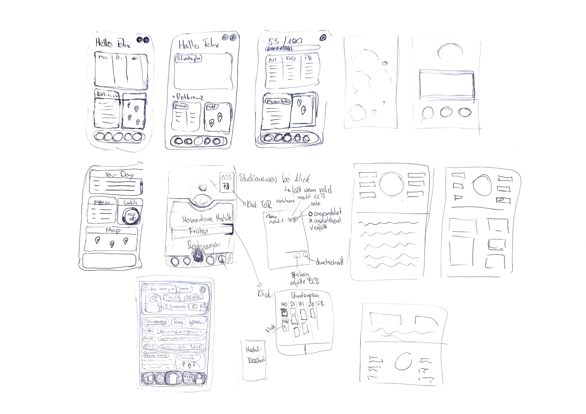
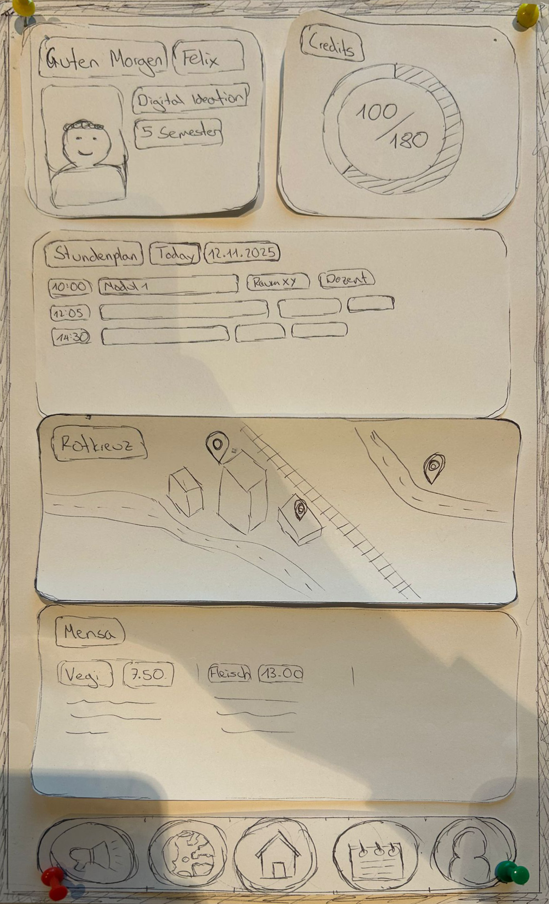
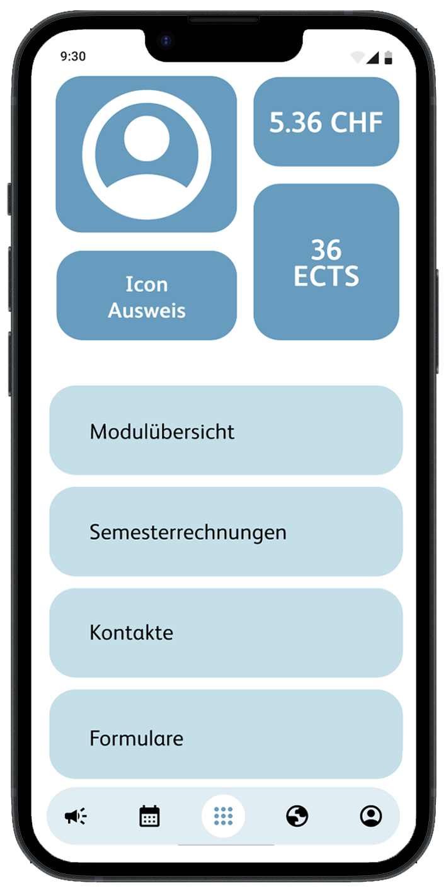
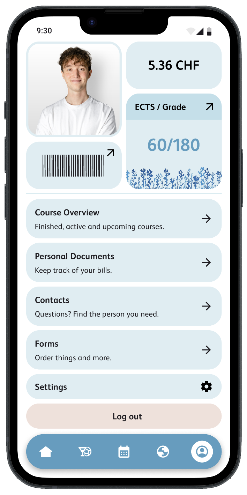

HSLU Companion organisiert den Studienalltag an der HSLU von In- sowie Auslandsstudierenden. Die App erleichtert die Bürokratie rund um das Studium und bietet einen schnellen Überblick über studierendenspezifische Angebote ausserhalb des Studienalltags.
Gruppenskizzen

Nach einer anfänglichen Konkurrenzanalyse und einer Gruppendiskussion wurden in einer individuellen Übung Ideen skizziert, wie die App aussehen könnte. So konnten zentrale Funktionen sowie die Grundvorstellungen des Aufbaus in der Gruppe evaluiert werden.
Auswertung
Lofi to Hifi



Als zentraler Organisationspunkt wurde entschieden, ein Dashboard zu nutzen. In einer Gangbefragung konnten die Studierenden anhand eines Lofi-Prototyps aus Papier ihr ideales Dashboard selbst zusammenstellen. Die Ergebnisse sowie die Gedanken der Teilnehmenden wurden dokumentiert und verglichen. Anschliessend wurde aufgrund der Erkenntnisse ein Hifi-Prototyp in Figma erstellt. In drei Iterationen wurde der Prototyp von Usern getestet und angepasst. Eine detaillierte Beschreibung des Prozesses ist im Miro-Board zu finden.